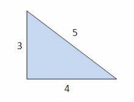
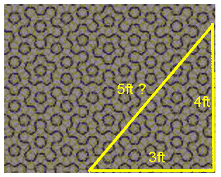

3:4:5 Triangle
A right triangle where the sides are in the ratio of
the integers 3:4:5
This is one example of the many "pythagorean triples".

Try this In the figure below, drag the orange dots on each
vertex to reshape the triangle.
Note how it maintains the same proportions between its sides.
Any triangle whose sides are in the ratio 3:4:5 is a right triangle.
Such triangles that have their sides in the ratio of whole numbers are called Pythagorean Triples.
There are an infinite number of them, and this is just the smallest.
See pythagorean triples for more information.
If you multiply the sides by any number, the result will still be a right triangle whose sides are in the ratio 3:4:5.
For example 6, 8, and 10.
Interior Angles
Because it is a right triangle one angle is obviously 90°. The other two are approximately 36.87° and 53.13°.
An everyday example

The 3:4:5 triangle is useful when you want to determine if an angle is a right angle.
For example, suppose you have a piece of carpet and wish to determine if one corner of it is 90°.
First measure along one edge 3 feet. The measure along the adjacent edge 4 ft.
If the diagonal is 5 feet, then the triangle is a 3:4:5 right triangle and, by definition, the corner is square.
You could of course use any dimensions you like, and then use Pythagoras' theorem to see if it is a right triangle.
But the numbers 3,4,5 are easy to remember and no calculation is required. You can use multiples of 3,4,5 too.
For example 6,8,10. Whatever is convenient at the time.
Other triangle topics
General
Perimeter / Area
Triangle types
Triangle centers
Congruence and Similarity
Solving triangles
Triangle quizzes and exercises
(C) 2011 Copyright Math Open Reference.
All rights reserved